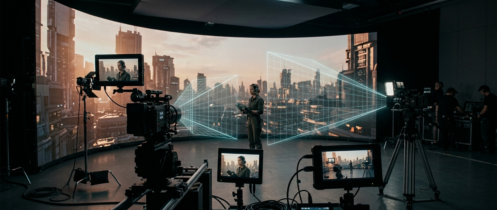

Frame Remapping. Every camera sees its own perspective.

Frame remapping lets multiple genlocked cameras see the LED wall from their own correct perspective. Not the wide shot’s perspective. Not a compromise. Each camera gets the background it needs for its angle.
For multi-camera virtual production, that matters. Without frame remapping, a second camera can see the wrong parallax, making the environment feel off. With it, the background responds properly to each camera position, so the shot holds together across coverage.
It can also support green screen workflows, giving the crew a live on-set visualization of the finished shot while still capturing the clean elements needed for post.
Cineva sets up the system, checks the camera relationships, and confirms the workflow before production is relying on it. When frame remapping is right, it disappears. When it is wrong, everyone sees it. Our job is to make sure it disappears.
Common questions
Before you spec the remap.
How many cameras can you remap simultaneously?
Multi-camera setups supported — each camera sees its own correct perspective on the wall.
Does this work with interleaved frames for keying?
Yes. Frames can be interleaved between camera angles when chroma-key compositing is in the workflow.
What's the latency?
Frame-accurate. Sync to camera is the design constraint, not an afterthought.